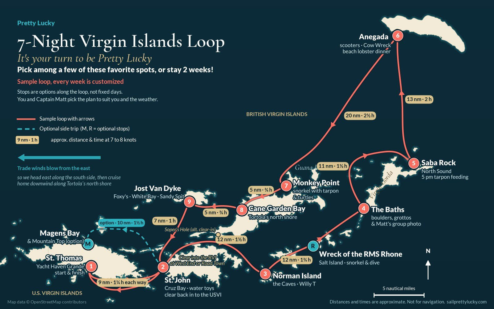
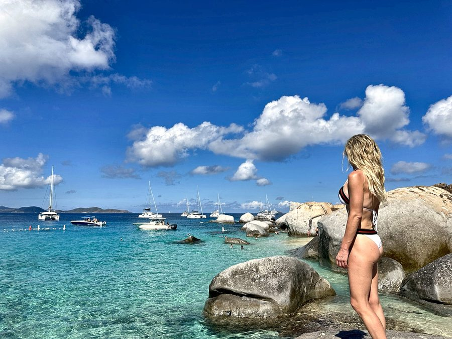

Pretty Lucky is a 2014 Lagoon 560 sailing catamaran with generous deck spaces, a bright open saloon, and three queen guest cabins, each with its own en-suite head. Crewed by Captain Matt and Chef Dev, she is run as a full-service charter, with every detail handled so you only unpack once.
~56'Length
3Queen Cabins
6Guests
2Crew
USVI+BVICruising
Gallery
Click a category to see the water toys, the galley, the interior, and the places you can visit in the US and British Virgin Islands.
SNORKELFLOATING SUN DECKTHE TENDERPADDLEBOARD & SEA SCOOTERSWATER CHAIRSFLOATS & TOYSTHE GALLEYSALON DINNERCOCKPIT DININGFLYBRIDGE DININGCOCKTAIL STATIONESPRESSO BARTHE SALONSALON LOUNGEQUEEN CABINQUEEN CABINQUEEN CABINEN-SUITE HEADON THE WATERTHE ANCHORAGETHE BATHS · VIRGIN GORDABEACH AT SUNSETCLIFF JUMPFOXY'S · JOST VAN DYKE
Video
Aboard Pretty Lucky — life on the water.
Charter Rates
Fully crewed, all-inclusive charter (crew, fuel for the itinerary, standard provisioning, and water toys).
Most Popular
Standard Week
$29,000/ week
7 nights · up to 6 guests
Captain + private chef
Standard provisioning & bar
USVI + BVI itinerary (BVI leg included)
Peak / Holiday
$36,000/ week
High-season & holiday weeks
Premium provisioning options
Custom routing on request
Priority calendar booking
Plus applicable BVI & USVI fees/permits where required. Sleep-aboard and shortened stays quoted on request.
Your Week Aboard Pretty Lucky
It’s your turn to be Pretty Lucky. There is no fixed itinerary on Pretty Lucky. You and Captain Matt plan the week together around what your group loves most and what the weather is doing. Every crewed charter includes a BVI leg (required for our operating structure).

Pick among a few of these favorite spots, or stay 2 weeks! Sample loop, every week is customized. Distances and times are approximate, at 7 to 8 knots.
Arrival night: settle in, St. Thomas
Step aboard at Yacht Haven Grande, kick off your shoes, and let the week begin right here at the dock. Unpack once, find your favorite spot on the flybridge, and toast your arrival with the cocktail of the day while Dev serves your first dinner under the stars. No schedule, no rush. Just you, the warm breeze, and the lights of Charlotte Amalie on the water.
Let’s get together and plan your week
There is no fixed itinerary on Pretty Lucky. Over breakfast on your first morning, Captain Matt sits down with you to plan the week around what your group loves most and what the weather is doing. Beach bars or quiet coves? Snorkeling, the eFoil, or a long lunch ashore? You choose, and Matt picks the best day for each stop.
We left the rush at home. Our aim is simple: the best quality time, shaped to your wishes.
Why we sail a loop
The Virgin Islands trade winds blow from the east. So we sail a loop: early in the week, while everyone is fresh, we head east along the sheltered south side of the islands, through the Sir Francis Drake Channel. Then we cruise home downwind along Tortola’s north shore with the breeze at our back. Most hops are an hour or two, so sailing is part of the fun, not the whole day, and there is plenty of time to enjoy the islands.
Your first two days
Day 1
St. John
A short hop to St. John
About 9 nm, roughly an hour. Drop the hook in a calm St. John bay for your first swim in crystal-clear water and a lazy afternoon in the sun. Try the eFoil if you can’t wait.
Day 2
Norman Island, BVI
Hello, BVI
We cross into the British Virgin Islands and clear into the BVI at West End, then glide on to Norman Island for the night, about 12 nm in all. Snorkel the Caves, then the Willy T is waiting.
Then pick your favorites
Pick among a few of these favorite spots, or stay 2 weeks! Every stop below is an option along the loop, listed in the order we usually sail them. Matt will fit in as many as your week, your wishes, and the weather allow.
Norman Island
Pirate caves and a legendary leap
Snorkel the Caves, then anchor in The Bight and climb aboard the legendary Willy T floating bar for a cocktail or four. It is customary to jump off the top deck and splash into the warm water. Your turn.
Salt Island
The wreck of the RMS Rhone: dive into history
Just off the southwest tip of Salt Island lies one of the most famous wrecks in the Caribbean. The Royal Mail Ship Rhone went down in a hurricane in 1867, and today her bow, propeller, and coral-covered ribs sit in clear water alive with fish. The shallow stern is a dream to snorkel, and the deeper bow is a world-class dive. Captain Matt is a professional diver and will show you the best of it.
Virgin Gorda
The Baths: your photo of a lifetime
Beat the crowds to The Baths and wander through giant granite boulders, sunlit grottos, and turquoise pools. Matt, our professional photographer, captures a once-in-a-lifetime photo of your group among the boulders.

North Sound
Saba Rock: the 5 pm tarpon feeding
Late afternoon in North Sound brings cocktails on Saba Rock and its famous 5 pm tarpon feeding, when huge silver fish crowd the dock. Then watch the sun go down over one of the most beautiful bays in the Caribbean.
Stretch out on the trampoline for the sail to this low coral island as the water turns an impossible shade of turquoise. Rent a scooter and let the island unfold: flamingos in the salt ponds, miles of empty beach, the soft sand of Cow Wreck Beach. Snorkel the reef at Loblolly Bay, or do nothing at all. As the sky turns pink, sit down to a fresh Anegada lobster dinner right on the beach, then meet us on the flybridge for Matt’s famous margaritas.
Guana Island
Monkey Point: swimming with giants
Slip into the clear, protected water off Guana Island, one of the best snorkel spots in the BVI. Big schools of fish swirl around the rocky point, giant silver tarpon glide past, and turtles and rays are often spotted.
Tortola
Cane Garden Bay: Tortola’s prettiest beach
Wake to the smell of Dev’s fluffy omelettes and cruise Tortola’s green north shore to Cane Garden Bay, a sweep of white sand and palms beneath steep hills. Swim, stroll the beach, and find a hammock for the afternoon.
Jost Van Dyke
Legends and powder-white sand
Drop anchor at Great Harbour, home of the legendary Foxy’s. Wander barefoot around Sandy Spit, a tiny cay ringed with powder-white sand, then spend a golden evening at White Bay, one of the best beaches in the BVI, with a Painkiller from the Soggy Dollar Bar in hand.
St. John
Water toys and a night to remember
At the start or end of your week, St. John is our playground. (On the way home, we clear back into the USVI at Cruz Bay.) We find a quiet bay away from the crowds so you can try the eFoil and the motorized stand-up paddleboard, or glide beneath the surface with our Lefeet underwater scooter. Then dress up and celebrate with fine dining ashore in Cruz Bay.
St. Thomas
Magens Bay and Mountain Top: a St. Thomas favorite
Swim at Magens Bay, a perfect heart-shaped sweep of calm water and white sand. Then head up to Mountain Top, the restaurant that claims it invented the banana daiquiri. We are not sure about that, but we know Captain Matt has improved it.
Until next time
Linger over Dev’s pancakes and fresh waffles, then cruise home to Yacht Haven Grande with sun on your shoulders and Matt’s photos of your week. You will already be planning your return.
There is so much to do, and that is why guests come back year after year.
Sample loop at a glance
Sample loop, every week is customized. Distances and times are approximate, at 7 to 8 knots. Total loop about 105 nm, roughly 15 hours under way across the week.
Leg
Distance
Time
St. Thomas (Yacht Haven Grande) to St. John
9 nm
1 to 1¼ h
St. John to Norman Island (clear into the BVI at West End)
12 nm
about 1½ h, plus clearance
Norman Island to The Baths (passing the RMS Rhone at Salt Island)
12 nm
about 1¾ h, upwind, motor-sail
Norman Island to the Rhone (if stopping)
5 nm
about ¾ h
The Baths to Saba Rock, North Sound
11 nm
about 1½ h
North Sound to Anegada
13 nm
about 2 h
Anegada to Monkey Point
20 nm
2½ to 3 h (longest leg, downwind)
Monkey Point to Cane Garden Bay
5 nm
about ¾ h
Cane Garden Bay to Jost Van Dyke
5 nm
about ¾ h
Jost Van Dyke to St. John (clear back into the USVI at Cruz Bay)
7 nm
about 1 h
St. John to St. Thomas
9 nm
1 to 1¼ h
Option: St. John to Magens Bay
10 nm
about 1½ h (or a short taxi from the dock)
More relaxed version: skip Anegada and sail from North Sound straight to Monkey Point (about 14 nm, about 2 h). That saves about 19 nm and a full day, and leaves room for an extra beach day at White Bay, the Indians snorkel near Norman, or Cooper Island.
Every week is flexible and depends on weather, sea conditions, and what your group loves most. Meals and drinks ashore are at guest expense.
What's Included
A crewed charter means you unpack once and we handle the rest. Your rate covers the boat, the crew, and a full provisioning plan.
2Crew Onboard
3Cooked Meals / Day
BarOpen Provisions
ToysSnorkel · SUP · Tenders
USVI + BVIFuel for Itinerary
Standard provisioning, housekeeping, and linens are included. Premium provisions, special dietary requests, and dockage/specific mooring fees can be arranged in advance.
Good to Know
Quick answers before you inquire.
Are children welcome aboard?
Yes — Pretty Lucky is family-friendly. Tell us the ages in your group when you inquire so we can plan safety gear, menus, and the right pace for the itinerary.
Can you handle dietary needs?
Yes. Standard provisioning covers most preferences, and special dietary requests can be arranged in advance — just note them on your inquiry.
What is not included in the rate?
Applicable BVI & USVI fees and permits where required, premium provisions and specialty requests beyond standard provisioning, and dockage/specific mooring fees. Crew, meals, standard bar, fuel for the itinerary, and water toys are included.
How do I confirm a week?
Send an inquiry with your dates and group size. We reply within 24 hours to confirm real availability, and the charter agreement with full terms is provided before any payment.
Meet the Crew
Pretty Lucky runs as a full-service charter, captained, hosted, and cared for by a dedicated two-person crew.
Captain
Mateusz “Matt” Kubik
Matt is a professional diver, so he is the perfect guide for exploring beneath the surface. He is also a mixologist who specializes in craft cocktails, and his margaritas are a guest favorite. As a professional photographer, he captures stunning shots of your trip that are made for Instagram. A true coffee lover, he roasts fresh beans aboard for your morning latte, and he handles the setup of all the water toys so your days on the water are as fun as possible. With more than 120,000 nautical miles under his keel, he has you in very capable hands.
Chef & First Mate
Devaney “Dev” Barnard
Dev brings real passion to the galley and a gift for making every plate as appetizing as it is delicious. Her specialties include fresh sourdough bread baked daily, pasta made from scratch, local seafood delicacies, and a decadent chocolate temptation dessert. Breakfast is made from scratch too, with fluffy omelettes, pancakes, and fresh waffles to start your day. Her cooking also draws on her South African roots and her travels.
Owned by Wendy and Eric, who cared for Pretty Lucky privately in the Caribbean for years before sharing her with charter guests.
Planning a trip? Send an inquiry and we will reply within 24 hours.
Guest reviews
What our guests say
A few notes from weeks aboard Pretty Lucky with Captain Matt and Chef Dev.
★★★★★
Captain Matt made every day feel easy. He knew exactly where to take us, and with only six of us on board it felt like we had the whole boat to ourselves.
★★★★★
Chef Dev spoiled us from the first morning. Fresh bread, beautiful dinners at sunset, and we never once thought about cooking or cleanup.
★★★★★
The Baths on Virgin Gorda was the highlight of our week. Matt timed it so we had the rocks almost to ourselves, and the water was perfect.
★★★★★
Matt is a diver, and it shows. He took us to reefs we never would have found on our own, and we felt completely looked after.
★★★★★
We looked at newer, more expensive boats and still chose Pretty Lucky. The value is real, and the crew is why we will come back.
★★★★★
Six guests is the sweet spot. It felt intimate, never crowded, and Dev and Matt treated us like friends they had invited aboard.
Availability & Reservation
This calendar is a planning tool only — it does not show live, confirmed bookings. To check real availability for your week, send an inquiry and we will confirm within 24 hours.
Month
Available Booked Past
Owner note: date toggles save to this browser only and are not a public booking record. Guests: please inquire — we confirm real availability personally.
Inquire / Book
Tell us your dates and group. We reply within 24 hours to confirm availability and provisioning.